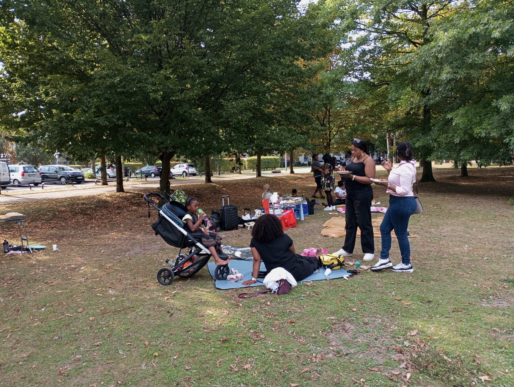

Unterstützung für alleinerziehende Mütter
Wir helfen alleinerziehenden Müttern, damit ihre Kinder an außerschulischen Aktivitäten wie Musik, Sport, Nachhilfe und kulturellen Bildungsangeboten teilnehmen können.
Projekte
Unsere Projekte unterstützen Frauen, Kinder, Jugendliche, Witwen und Familien durch Bildung, Integration und soziale Unterstützung.

Unterstützung für Frauen durch Bildung, digitale Kompetenzen und soziale Integration.
Musikunterricht, Lernprogramme und gemeinschaftliche Aktivitäten für Kinder und Jugendliche.
Praktische Hilfe und soziale Unterstützung für Witwen und bedürftige Familien.


Soziale Projekte
Neben Bildungs- und Integrationsangeboten unterstützt unsere Gemeinschaft konkrete soziale Projekte: Hilfe für alleinerziehende Mütter, Unterstützung von Kindern bei außerschulischen Aktivitäten, Lebensmittel- und Sachspenden sowie direkte Unterstützung für Witwen.
Wir helfen alleinerziehenden Müttern, damit ihre Kinder an außerschulischen Aktivitäten wie Musik, Sport, Nachhilfe und kulturellen Bildungsangeboten teilnehmen können.
Wir unterstützen Witwen mit direkter Hilfe, Gemeinschaft, Ermutigung und praktischer Versorgung, damit sie in schwierigen Lebensphasen nicht allein bleiben.
Wir organisieren Lebensmittel, Grundversorgung und kleine Hilfen für Familien und Kinder, die besondere Unterstützung benötigen.
Unsere Arbeit verbindet Unterstützung in Düsseldorf mit sozialer Verantwortung für bedürftige Familien, Kinder und Witwen in afrikanischen Gemeinschaften.
Projektbilder